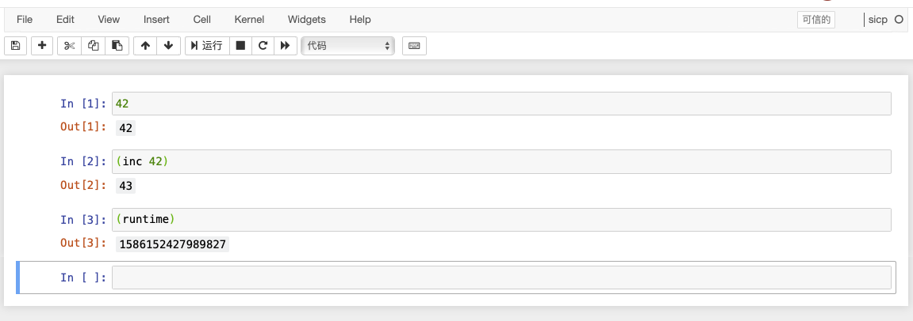

Scheme on Racket (一) 起步
最近工作中深感自身內力不足, 遂決定讀 SICP (Structure and Interpretation of Computer Programs) 一書以加強修行.
因書中程式碼均以 MIT Scheme 編寫, 在讀此書之前還需瞭解 Lisp 的這一方言.
因 MIT Scheme 已不再維護其 Windows 版, 為了方便我在 macOS 和 Windows 上獲得比較一致的體驗, 我選擇使用 Racket 和 SICP language.
這個系列就是我學習 Scheme (SICP language on Racket) 的一些筆記.
自然, 在開始學習之前需要先準備工作環境, 我所選擇的軟體如下:
- JupyterLab
- Minimal Racket (也可以使用完整 Racket 發行版)
- sicp
- iracket
安裝 Racket 和 SICP
macOS:
1 | $ brew install minimal-racket |
Windows:
1 | > scoop install racket-minimal |
安裝 JupyterLab 和 iracket
因當前版本的 iracket 不支援選擇語言, 所以在通過 raco pkg 安裝好之後需要到 kinosang/iracket 獲取修改版的 install.rkt 和 iracket.rkt 並替換到本地.
macOS:
1 | $ brew install jupyterlab |
Windows:
1 | > pip install jupyterlab # 先用 scoop 安裝 python |
測試 iracket
分別使用 racket kernel 和 sicp kernel 進行測試.
Racket
1 | (require 2htdp/image) ; draw a picture |

SICP
1 | (inc 42) |
